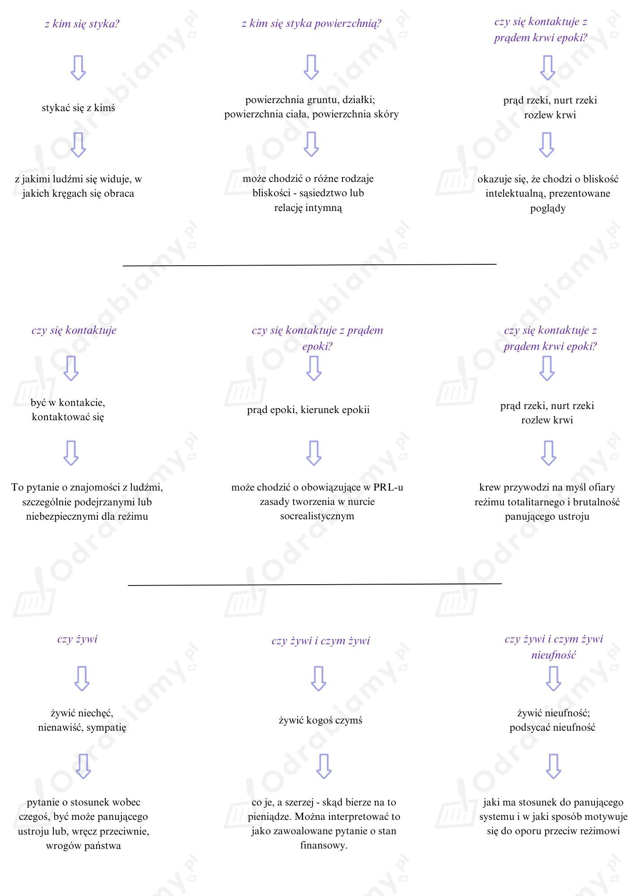

Indywidualne
Przykłady form charakterystycznych dla języka urzędowego:
Przykłady form charakterystycznych dla języka literackiego:
Niejednorodność stylistyczna skłania czytelnika do skupienia się na języku utworu. Za jej pomocą budowana jest parodystyczna umowa utworu, wyśmiewającego formalizm czasów PRL-u. Skontrastowanie urzędowych formułek z poetyckimi rozważaniami o sprawach intymnych wskazują na niebezpieczne przenikanie się dwóch sfer - publicznej i prywatnej.
Przykładowo:

Przykładowo (należy wybrać dwie odpowiedzi):
Na podstawie utworu Stanisława Barańczaka Wypełnić czytelnym pismem można stwierdzić, że jednostka w państwie totalitarnym poddawana jest nieustannej inwigilacji. Zainteresowanie organów władzy dotyczy nie tylko podstawowych danych personalnych, które można znaleźć w większości kwestionariuszy, lecz także kwestii głęboko intymnych, takich jak związki emocjonalne z innymi ("[...] z kim jest zbieżny / częstotliwością pulsu?") czy bliskie przesłuchiwanemu przekonania i prądy umysłowe ("[...] z kim się styka / powierzchnią mózgu?").
Władza totalitarna zdaje się osaczać jednostkę, doprowadzając do jej izolacji od reszty społeczeństwa. W utworze wielokrotnie wskazuje się na dojmującą samotność ankietowanego, np. "[...] krewni za granicą skóry? (tak, nie); dlaczego nie? (uzasadnić)", jego zły stan psychiczny, skutkujący poszukiwaniem pomocy u specjalistów ("[...] czy korzysta z telefonu zaufania?").
Dwa ostatnie pytania wiersza są nie tylko podsumowaniem kondycji jednostki próbującej funkcjonować w systemie totalitarnym, ale także dramatyczną prognozą na przyszłość. Końcowe punkty kwestionariusza dotyczą chęci posiadania dzieci. Oczywistym wydaje się, że odpowiedź będzie przecząca, ankietowany nie ma wręcz możliwości wyboru - ostatnie pytanie brzmi: "dlaczego / nie". Jednostka żyjąca w ciągłej inwigilacji i osamotnieniu wybiera bezdzietność, by nie zmuszać swoich potomków do egzystencji w skrajnie depresyjnym, nieprzyjaznym środowisku państwa totalitarnego. Odarcie z intymności ogranicza możliwość poznania i zbliżenia się do drugiego człowieka na tyle, by stworzyć z nim bezpieczny dom dla dziecka. Świat, w którym żyją adresaci kwestionariusza z wiersza, nie stwarza żadnych perspektyw dla kolejnego pokolenia.
Z wiersza wyłania się tragiczny obraz losu ludzi żyjących w PRL-u. Pozbawiono ich prywatności, każdy ruch kontrolowany jest przez organy państwa, gromadzącego nawet intymne informacje o swoich obywatelach. Wrażenie ciągłej inwigilacji potęguje w nich uczucie niepokoju, wpływa negatywnie na stan psychiczny. Nieustannie towarzyszy im lęk. Poczucie beznadziei objawia się w pytaniach o sens narodzin i życia.
Sytuacja ta ma negatywny wpływ na kondycję związków międzyludzkich. Poczucie bycia kontrolowanym sprawia, że jednostka musi ostrożnie decydować, z kim wchodzi w bliższe relacje. Ludzie zmuszani są do wyboru między najbliższymi, a pracą, karierą czy nawet - wolnością. To zaś wzmaga uczucie samotności, wyizolowania od reszty społeczeństwa, pogłębiając zapaść psychiczną. Dylematem egzystencjalnym staje się pragnienie posiadania potomstwa, towarzyszy mu bowiem uczucie skazywania własnych dzieci na życie pod ciągłą kontrolą. Z tego powodu ludzie rezygnują z planów zakładania rodzin.
Przygotowanie wypowiedzi - część indywidualna zadania
Indywidualne
Indywidualne
Indywidualne